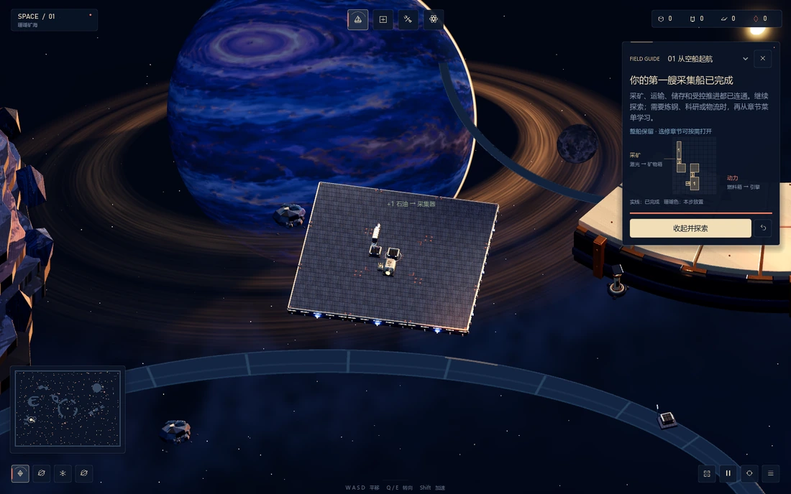

SPACE — Orbital Workshop. A game design portfolio.
PLAYABLE BUILD / v0.14.0
Step inside the workshop.
Start with an empty ship. Build a working supply line, then take your first flight.
PLAY IN BROWSER
EXPLORE · BUILD · PILOTGAME DESIGN PORTFOLIO / FIVE CHAPTERS
Read this chapter
A FACTORY YOU BUILD. A SYSTEM YOU PILOT.
How can understanding a system change the way a player moves, attacks and controls it?
SPACE is an automation and construction sandbox. Players explore and gather resources, build a ship, then pilot what they assembled. Supply routes and trigger assignments determine how installed devices respond, so understanding the system can change the craft's handling and available actions.
GROWTH THAT TRAVELS WITH YOU
Each extension remains part of the craft the player explores with. Acquired resources become working structures, supply routes and new capabilities.
UNDERSTANDING CHANGES CONTROL
Engine placement, supply and trigger groups change the response to an input. Progress can alter how the craft acts as well as what it produces.
A SYSTEM BUILT THROUGH USE
Pause to edit, try the configuration, then expand around a need discovered in flight. The framework is playable; its learning curve still needs player observation.
Read this chapter
I use three lenses for progression: what players acquire, how skilfully they act, and how deeply they understand a system. I wanted understanding to change execution through what the player builds.
WHY KEEP GROWTH ON A CARRIER?
Putting production on a ship keeps construction in use. Resources become part of a vehicle that travels with the player, while a problem encountered in flight gives the next extension a purpose.
RAFT / ACQUISITION MADE TANGIBLE
Raft makes accumulated construction travel with the player. I wanted each new structure and supply route to remain useful during exploration, so growth would accompany the player as a changing vehicle.
NOITA / KNOWLEDGE BECOMES ABILITY
Noita connects acquisition, understanding and execution particularly well in my experience. Yet different builds can demand sharply different handling, making mechanical learning less continuous. This led me to seek a steadier control foundation that players could keep reorganising.
THE QUESTION CARRIED INTO SPACE
My first game pursued this through a trigger network. SPACE reworks the same ambition as automation carried on the craft the player controls.
AUTOMATION / BEYOND THROUGHPUT
In shapez, planning and throughput dominate my attention. I wanted production knowledge to shape an immediate action response too, as supply already supports combat in Mindustry.
01 / ACQUISITION
Resources, devices and deck space accumulate as a persistent craft. Each addition should support exploration or a new way to act.
02 / EXECUTION
Practice develops timing and coordination. A stable control foundation should make learning one configuration useful when the craft expands.
03 / UNDERSTANDING
Learning supply, layout and trigger relationships lets the player reorganise how the craft responds, rather than only increase output.
Read this chapter
Explore and gather, build the ship, then pilot it. I connect these activities through supply and triggers, so the player builds the conditions for an action as well as deciding when to perform it.
EXPLORE + GATHER > BUILD + CONFIGURE > PILOT + OPERATE > RETURN TO BUILD
INPUT / TRIGGER / DEVICE
Keys activate triggers, which start or stop assigned devices. Supply determines whether those devices can work and how much output they can sustain.
01 / PLACE + EDIT
Pause to build in 2D or 3D. Place and rotate devices, then test again with recovery and undo. Automated supply gradually replaces manual feeding.
02 / CONNECT SUPPLY + TRIGGERS
Deliver fuel or ammunition to the matching device. A route supplies the resources needed to operate and sustain output; a trigger decides when it runs. Stored fuel can keep a device working briefly after supply breaks.
PRODUCTION CHANGES POSSIBLE ACTIONS
Production changes the actions a craft can sustain. Understanding a route can therefore change acceleration, weapon availability or coordination, rather than only raising output.
03 / PILOT + EXTEND
PHYSICS / ENGINE POSITION MATTERS
I tailored thrust, torque, inertia and collision rules for the ship. Engine position and direction support acceleration, rotation and movement along different headings.
STABILITY / EXTEND A WORKING SYSTEM
Decks determine mass. Anchoring rotation to the core deck keeps existing engine relationships predictable as the craft grows. I wanted small edits to invite expansion, instead of forcing players to rebuild the whole control system.
LEARNING / A DIFFERENT RESPONSE TO A KEY
Layout, supply and trigger groups change the response to a key press. Understanding should alter handling and possible manoeuvres. The resulting long-term learning curve still needs player testing.
Weak, fuel-free WASD / Q / E thrust supports a smoother first flight and recovery. Installed engines still depend on the systems the player builds.
Read this chapter
My first game was a six-person Unity project and my first experience leading a team. I built the design around a branching trigger system intended to connect spell editing, resource collection and construction.
01 / A BRANCHING COMPONENT SYSTEM
Clicking a source hexagon sends triggers through connected cells. The same logic works in the backpack and map, while particle kinetic energy links motion to damage. The team connected a playable progression with two boss encounters and demonstrated a reaction-based rocket-engine prototype.
RETROSPECTIVE DESIGN ANALYSIS
01 / A HIGH COST BEFORE THE FIRST RESULT
Choosing a complex editor for my first game made the entry cost high. Components could become useful only in a later combination, even though the player had to judge them earlier. I needed useful partial results and earlier opportunities to try a hypothesis.
02 / A CONNECTED LOOP, A DIFFICULT LEARNING PATH
The loop connected combat rewards with construction and offered a safer place to experiment. Completing that flow did not ensure that players understood it. The gap between editing and feedback made a large possibility space difficult to explore deliberately.
03 / PRODUCTION OUTGREW THE CENTRAL EXPERIMENT
Two boss battles, characters, environments and extra combat systems expanded the workload. As a first-time lead, I was slow to protect the core experiment. I did not achieve the learning experience I wanted, but gained technical foundations and experience directing a team.
INTO SPACE / REBUILDING THE DESIGN
I kept the ambition to turn understanding into ability. The redesign replaces the dense trigger editor with visible automation on one persistent ship, then tests construction and physics separately before bringing them together.
Read this chapter
I separated construction and transport from movement and collision, then used each prototype to make a clearer decision. The later changes in dimension, setting and interface serve the same goal: keep attention on building a system and learning to operate it.
01 / 2D VALIDATION
The 2D prototype tested building, routes and device control. I removed ground construction when it weakened exploration and the need for automation.
02 / A DIMENSIONAL WORLD
I tested lighting and rendering in 3D. Spatial feedback became richer, while precise construction became less direct.
03 / SPACE FANTASY
The space setting returns to a focus on aerospace and the moving workshop, with a NASA-inspired industrial vocabulary.
04 / SHARED VIEWS + A CLEARER UI
Construction offers both 2D and 3D views. Editing, research and flight reuse inventory, configuration and selection interfaces.
SCOPE DECISION / ONE CARRIER
I removed ground construction when it competed with exploration and reduced the need for automation. Building only on the ship makes new resources a reason to travel and extend the same working carrier.
Shared state keeps the 2D and 3D views continuous. A simpler interface and guided first flight help players focus on a working supply-and-control system.
A / CONSTRUCTION EXPERIMENT
I isolated occupancy, inventory, transport and production. Clearer direction and port cues, placement, rotation and undo let me check the building process before reconnecting it with direct control.
B / MOVEMENT + COLLISION EXPERIMENT
I tested thrust and contact separately. Decks determine mass, the core provides a stable rotation reference, and engine placement changes force and torque. Opposite impact offsets produce opposite turning responses.
EVIDENCE + NEXT
PLAYABLE FRAMEWORK: construction, supply, triggers, shared-view editing and first-flight guidance. Next: observe how players diagnose a fault and change their control strategy.